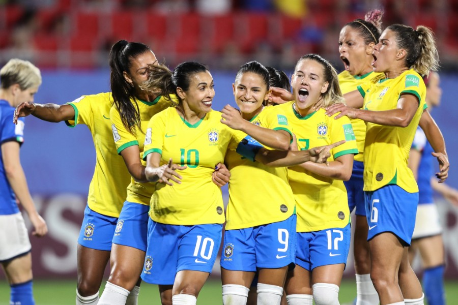

Futebol femenino brasileiro
Varias décadas o futebol foi visto como um esporte prejudicador, hoje em dia a realidade é muito diferente tendo apoio e varios jogadores como inspiração.
Entre salarios altos existe um paixão, uma obsseção por 11 pessoas correndo atrás de uma bola fazendo um estádio repleto vibrar,
como inspiração mulheres determinadas a ser um exemplo pro mundo. Milhoẽs de criticas más o amor pelo futebol se tornou maior que tudo.
Muitos dizem que futebol não é coisa de mulher mas quem são eles pra falar alguma coisa,
afinal existem mulheres que jogam melhor que qualquer homem por ai.
Enfim a sociedade tem problemas mentais só pode!
Envés da sociedade criticar seria muito mais facil dar um apoio as crianças que tem esse sonho, entre ter filhos que se perdem no mundo das drogas e um filho no futebol
é muito mais satisfatório. O certo é o mundo ter conciência e ajudar nossos jovens a ter um futuro melhor.
Em que ano o futebol femenino foi criado?
O futebol femenino já é jogado no brasil há mais de 100 mil anos entretanto foi legalizado há apenas 26 anos. Antes disso, acredite, o jogo era praticado de maneira escondida.
Foi só no ano de 1983 que surgiram os primeiros times profissionais no brasil.
À medida que a visibilidade do futebol feminino aumenta com eventos como a Copa do Mundo, também ocorre uma mudança na percepção e no tratamento das mulheres no esporte.
Isso ajuda a reduzir a discriminação e a violência de gênero e a criar um ambiente mais inclusivo para as mulheres em todas as áreas da sociedade.
O futebol feminino é a modalidade do futebol praticado com equipes compostas somente por mulheres.
Apesar de em alguns países o futebol ser predominantemente praticado por homens,188 países possuem seleção feminina e campeonatos de futebol profissionais e amadores para mulheres.
os desafios do futebol femenino brasileiro
Um dos principais é a disparidade salarial entre jogadores e jogadoras, essa disparidade salarial reflete não apenas uma desigualdade econômica, mas também uma questão de valorização e reconhecimento do trabalho das mulheres no esporte.
a remuneração no disparidade salarial reflete não apenas uma desigualdade econômica, mas também uma questão de valorização e reconhecimento do trabalho das mulheres no esporte no futebol feminino é frequentemente muito inferior à dos jogadores masculinos,mesmo quando atingem níveis semelhantes de sucesso e desempenho.
Além disso, a falta de investimento em infraestrutura e suporte adequado para as atletas é outro desafio a ser enfrentado. Muitos times e seleções femininas ainda carecem de recursos suficientes, limitando o desenvolvimento técnico e físico das jogadoras. A carência de patrocínios e investimentos compromete o crescimento
sustentável do futebol feminino, tornando difícil a profissionalização de muitas atletas.
Apesar dos desafios, o futebol feminino tem experimentado um notável aumento de visibilidade nos últimos anos. Esse crescimento é impulsionado por diversos fatores, incluindo o apoio de figuras importantes do mundo esportivo, a mobilização de movimentos de igualdade de gênero e a crescente conscientização sobre a importância
da diversidade no esporte.
O futebol feminino é uma modalidade que está ganhando cada vez mais espaço no Brasil e no mundo.É muito importante dar cada vez mais visibilidade às mulheres que sonham em serem grandes jogadoras. Afinal de contas, elas são tão talentosas e merecem os mesmos direitos que os homens nesse esporte.
os desafios do futebol femenino
- falta de envestimentos
- disparidade salarials
- pouca visibilidades
- falta de apoio